I am a postdoctoral research associate working with Jason McCullough at Iowa State University. I earned a Ph.D. in Mathematics at Auburn University studying under Hal Schenck, and a B.S. in Mathematics with minors in History and Classics at the University of Kentucky. While at the University of Kentucky, I conducted research with the University of Kentucky Math Lab and the Multimodal Vision Research Laboratory.
My primary research interests lie in commutative algebra, algebraic geometry, algebraic combinatorics, and data analysis. I am particularly interested in problems that can be approached via computation. A copy of my CV can be found here along with my contact information.
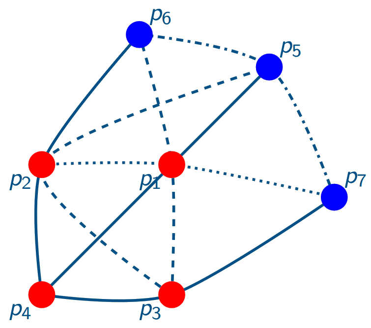
Graded Möbius Algebras of Matroids
Homological properties of graded Möbius algebras of matroids.
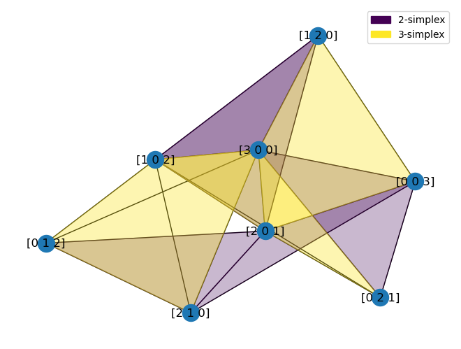
Castelnuovo-Mumford Regularity
How complicated can the generators and relations of a module be?
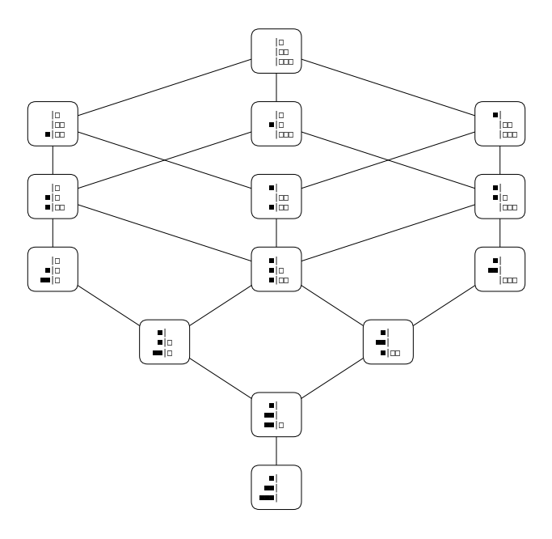
Stable Tamari Lattice
The combinatorics of posets in the stable Tamari lattice.
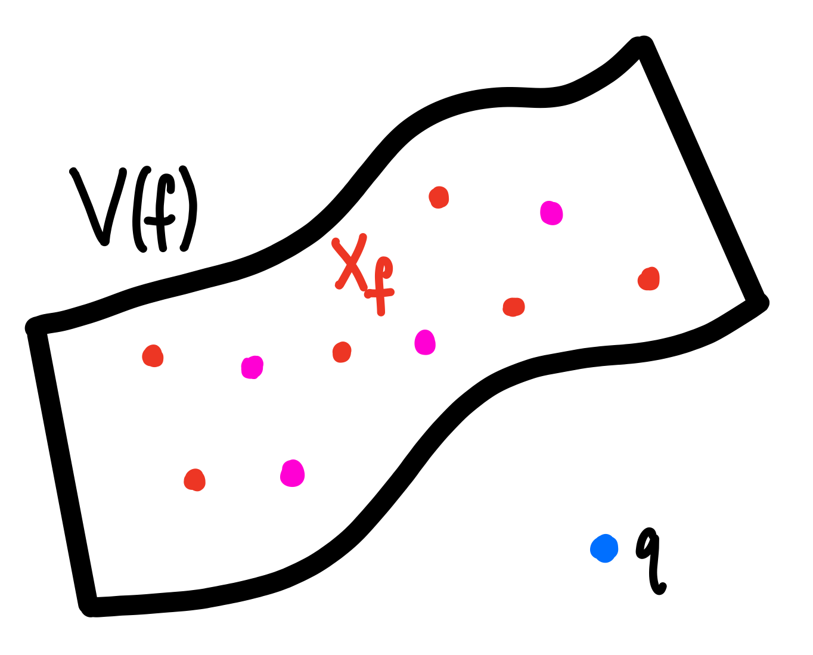
Lefschetz Properties
When does multiplication by a linear form have full rank in an Artinian algebra?
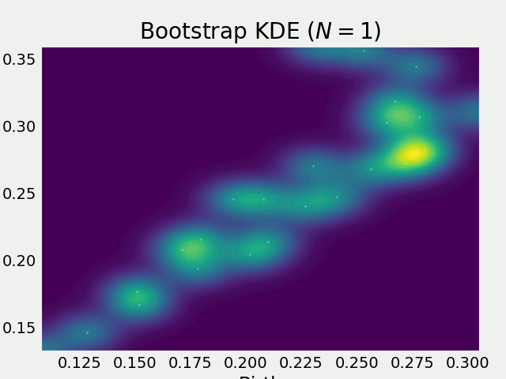
Topological Data Analysis
Use techniques from computational topology to analyze and exploit the shape of data.
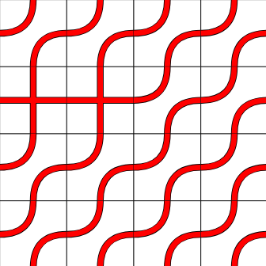
MatrixSchubert
A Macaulay2 package with functions for investigating ASM and matrix Schubert varieties.
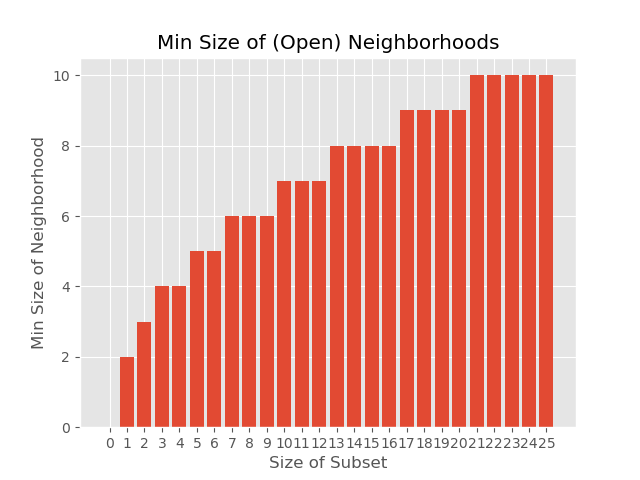
Minimal Out-Neighborhoods
Python scripts for computing minimal out-neighborhoods (and some statistics) in the \( F \)-lattice.
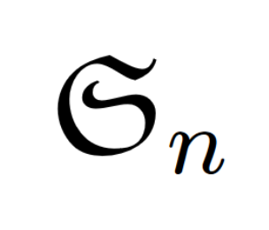
Permutations
A Macaulay2 package implementing permutations.
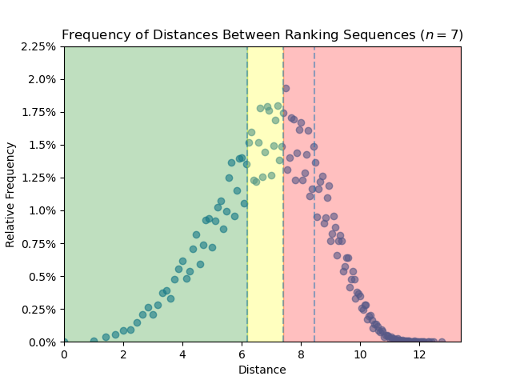
CAAT
A tool to help analyze course alignment.
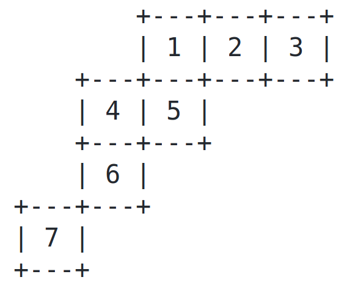
YoungTableaux
A Macaulay2 package implementing Young diagrams and tableaux.
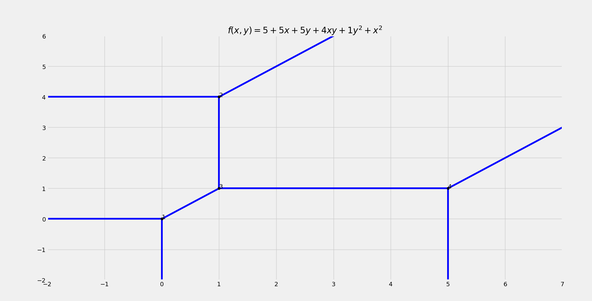
Tropical Curves
Python scripts for visualizing tropical curves.